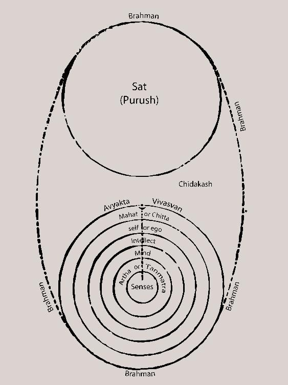

Illustration 4
When, from the mastak granthi, the mind is steadied and sight is directed straight to the middle of the two eyebrows, the “bindu” [spot; visible point] that is seen in the center of the undivided spherical substance – that is what is known as “Kuta.” This Kuta sits in the junction connecting the Inexpressible and the veiled personal consciousness [chitta] – in the thread/line connecting to the Purusha [Divine Being]. When this Kuta is pierced, the veil of creation is cut open. The place in the outer part of this Kuta, where “kotisuryaprateekAshaṃ chandrakoteesusheetalaṃ” [millions of suns and millions of supremely tranquil moons are seen] – that revelation of the Light of Consciousness – that is verily “Vivasvan” - “Savitramandal” [the “sun realm”]; and in the inner direction the undivided globe of the moon-sphere is seen. The Sky/Space that is beyond the Mahat-tattva or beyond the veiled chitta – that is verily called “Chidakash” [Sky of Consciousness]. That is what is also called “Avyakta” [Inexpressible]. Avyakta does not mean that It is full of darkness, it is filled with Divine Light. There can be no end to describing the infinite kinds of Its creative expression. However much one can begin to say, that statement will be nullified by the same proportion. Nothing can be really grasped [regarding It]. This is what is called “Maya.”*2 Because it is from here that the permutations of creation begin, it is [called] “Mula Prakriti” [Primal Creative Power]. None of the available names used to match This [Mula Prakriti] describes Its true Nature. That is why it is called “Avyakta” [Indescribable]. Up to this Avyakta everything is “asat” [untruth]. The Person Who is above this asat – it is He Who Is “Sat” [Truth]. It is He Who is the Supreme Destiny. In the fifteenth chapter [of the Bhagavad Gita], it is He [Who is spoken of as] the Supreme Person. This is because He is beyond “kshara” [destrucible] and “Akshara” [indestructible]. The Divine Consciousness that includes Maya – meaning: “Kutastha Chaitanya” or “Ishwara” - is called “Akshara.” And the “para” [beyond] and “apara” [perceivable] Prakriti are called “kshara” [See Illustration no. 5.] When, by “layayoga” [yoga of merging], the person-ness of the person comes to an end, truth and untruth merge and become One, that is when there is “sadasat tatparaṃ yat” [Truth, untruth and That which transcends both] – meaning: then there is Brahman, One without a second. (See Illustration no. 4.)